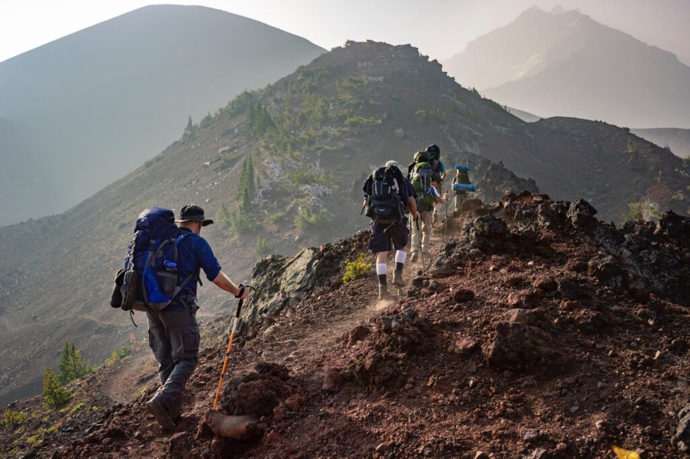
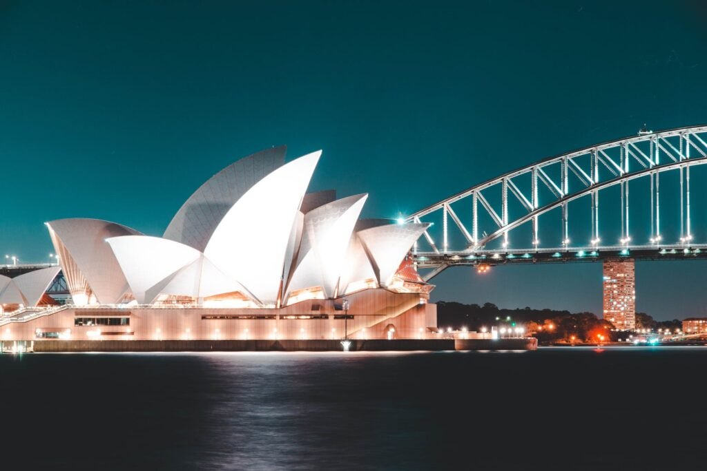
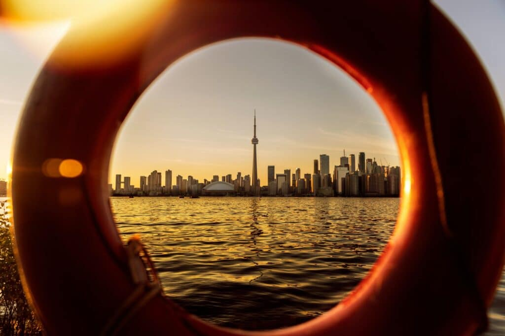
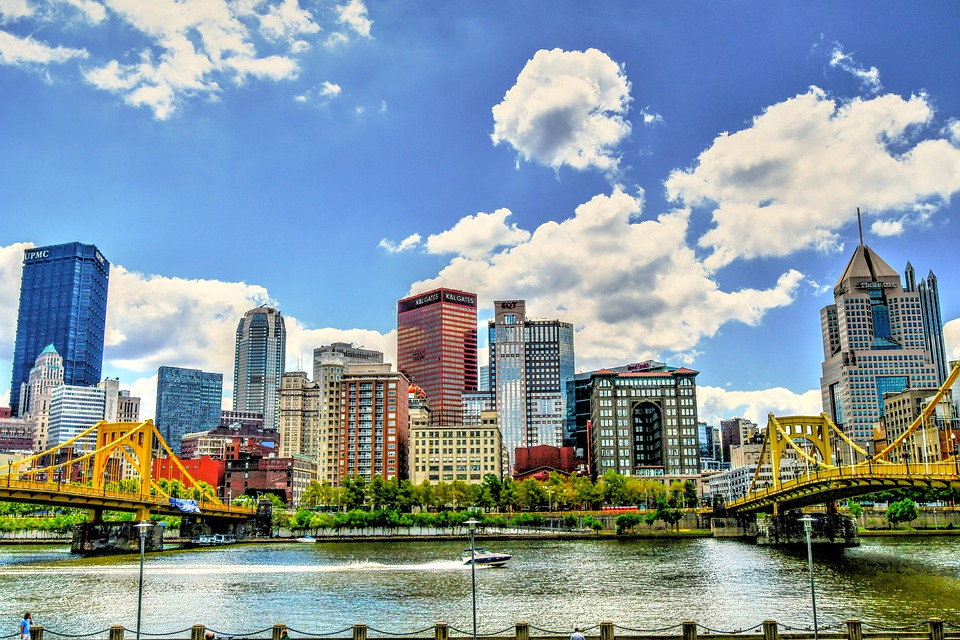

Travel

Category : Travel
10 Best Sightseeing Places in Dubai To Visit

If there were one word that can describe Dubai, it would be glamorous. The city with its skyscrapers, unique constructions, and record-breaking buildings is one of the fanciest cities in the world. Moreover, Dubai has a deep-rooted culture and interesting history that makes it even more intriguing. One of the reasons it is a popular holiday destination is because there is no dearth of tourist attractions in the city. Here are the 10 best sightseeing places in Dubai.
Travel
10 Most Beautiful Beaches in World You Must Visit

Come on, it is not long before summer! If you are looking for ideas on where to spend your holidays in the sun, check out the TripAdvisor Travelers’ Choice Beaches Awards ranking., the most beautiful beaches in the world awarded by TripAdvisor travelers with the best ratings and reviews.
Travel
Best Summer Season Treks In Himachal

Located in the western Himalayas, the mountainous state in North India is doubtlessly the land of majestic peaks, fresh grasslands, never-ending meadows boasting wild blossoms, thick forests, tranquil lakes, torrent streams, several cascades, and whatnot. Amateur nature lovers or professional trekkers, Himachal has everything you look for. The paradise attracts tourists and hikers round the year and is the ultimate destination for once-in-a-lifetime trekking. Be it summer, winter, or monsoon, all you need is to choose the right trek among hundreds of different other treks. Here you will be exploring the best summer season treks in Himachal Pradesh.
Travel
7 Best Luxury Secluded Getaways In Australia

Firstly, Australia is a prestigious place for its shocking seaside beaches and outback making it one of the most interesting nations for a vacation. Rather than reserving for Bali, why not look at this guide for the best extravagance separated excursions in Australia – we guarantee you won’t be frustrated. You will definitely enjoy your journey with your family ad friends on this tour of Australia.
Travel
Best Tourist Attractions In Canada

The second biggest nation on the planet.Canada has no lack of lovely scenes and remarkable destinations for voyagers to investigate. Across the nation to drift, the nation is home to energetic and socially rich urban communities, alongside unimaginable regular marvels. In Western Canada, the Rocky Mountains and urban areas of Vancouver, Victoria, and Calgary overwhelm most agendas. In Central Canada, Niagara Falls, Toronto, Ottawa, Montreal, and Quebec City are tourist attractions in Canada.
Travel
Best Things To Do In Pittsburgh, USA

Pittsburgh resembles that tranquil understudy in class who possibly talks when addressed along these lines, you figure he doesn’t have anything fascinating continuing for him however one day, you run over his own journal and acknowledge he is brimming with odd peculiarities and cute characteristics. The origin of Heinz ketchup and the Ferris wheel, Pittsburgh is a blessing that continues giving. Here are 30 activities while you’re in Pittsburgh, USA.